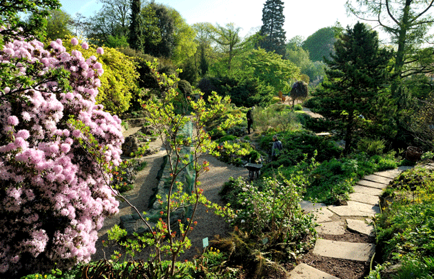

Nous organisons des évènements afin de faire connaître notre projet.
Le club photo vous donne l'occasion de nous rencontrer lors de nos différents évènements.
Lors de nos rassemblements, nous vous présenterons nos précédents voyages ainsi que notre projet futur.
15 Fevrier 2020 : Nous vous répondons en direct à vos questions sur notre site dans l'espace commentaire.
Horaires : 17h-19h
2 Mai 2020 : Avec l'association "Changeons d’Airs", nous proposons des façons de voyager plus durables et responsables. À travers des conférences, débats et témoignages, le tourisme et l’hébergement vert et durable sont mis en avant de façon ludique et accessible. L’occasion de réfléchir à nos préparations du raid lors du premier festival dédié au tourisme durable. Entrée libre et gratuite.
Lieu : Domaine de Longchamp - 75016 Paris. Horaires : 11h-17h
4 Juillet 2020 : Nous vous donnons rendez-vous au pied de la Tour Eiffel afin de discuter autour d'un beau monument. C'est l'occasion de réunir les nouveaux voyageurs et les plus passionnés à bavarder avec nous !
Lieu : 5 Avenue Anatole France, 75007 Paris. Horaires : 15h-17h
7 Novembre 2020 : Nous vous invitons au Salon de la Photo, rassemblant les plus grandes marques internationales de la photographie. Lors de cette rencontre, nous vous montrerons comment réaliser la plus belle photo. Avec un des meilleurs professionnels de la presse photo, nous vous dévoilerons nos techniques. Entrée libre et gratuite.
Lieu : Paris Expo Porte de Versailles - VIPARIS. Horaires : 11h-17h
31 Decembre 2020 : À un jour du nouvel an, nous vous convions au Parc de Belleville afin d'apprécier et de discuter autour d'un paysage spectaculaire. Avec la collaboration de la Philharmonie de Paris, nous vous présentons une agréable douceur à l'oreille des sons de la nature.
Lieu : 47 Rue des Couronnes, 75020 Paris. Horaires : 16h-18h
 6 Mars 2021 : Dernier préparatif avant le vovage au raid. Rendez-vous à la forêt de Fontainebleau pour une petite randonnée de préparation afin de mieux nous connaître.
6 Mars 2021 : Dernier préparatif avant le vovage au raid. Rendez-vous à la forêt de Fontainebleau pour une petite randonnée de préparation afin de mieux nous connaître.
Lieu : Forêt de Fontainebleau, 77300 Fontainebleau. Horaires : 9h-17h